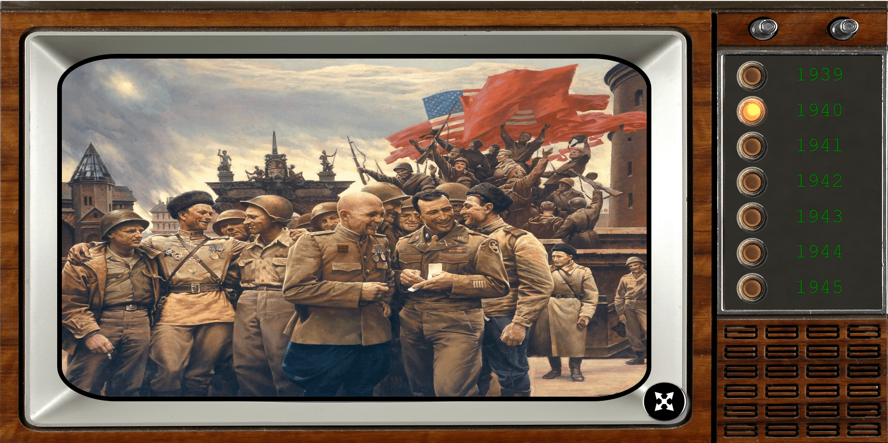
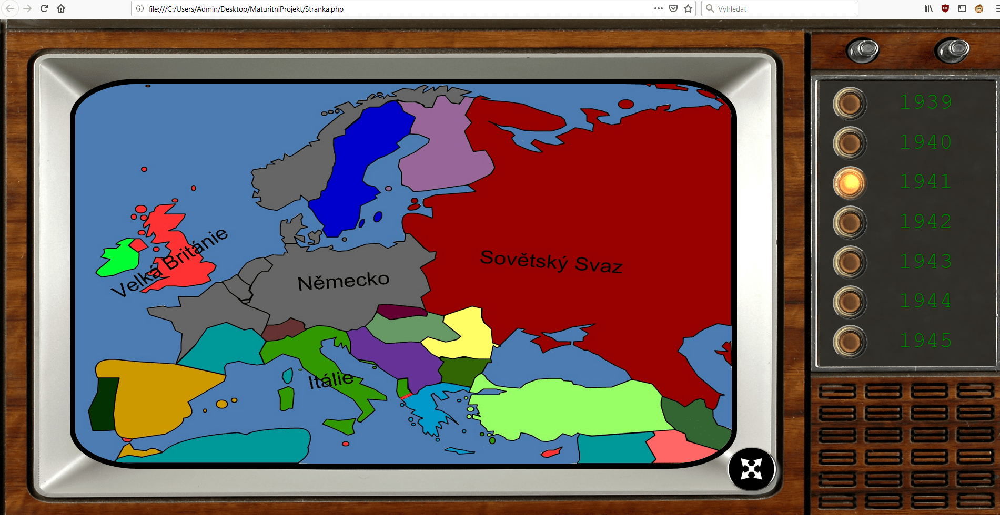

Zdravím!
Chtěl bych Vám ukázat příklady mé práce, konkrétně mapa druhé světové války, což byl můj předchozí velký projekt. Uživatel se mohlo pohybovat na časové ose války pomocí intraktivní tlačítek, což obměnovalo mapu, která také měla menší interaktivní prvky, např. názvy bitev či důležitých operací. Použito bylo HTML, CSS, Javascript, JQUERY, SQL a další. Tady jsou nějaké povedné obrázky z projektu.
 